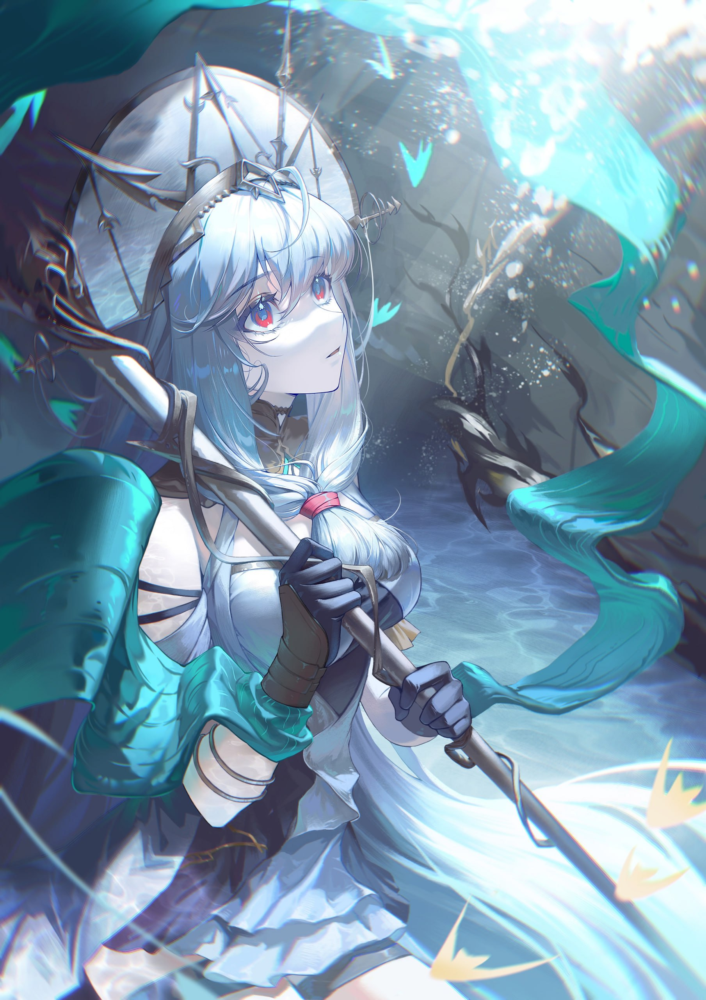
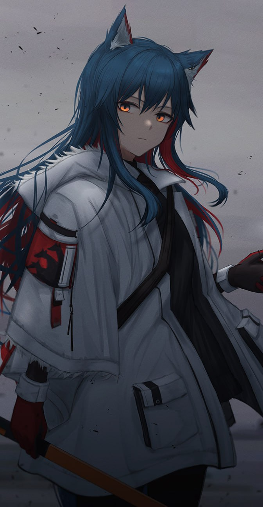
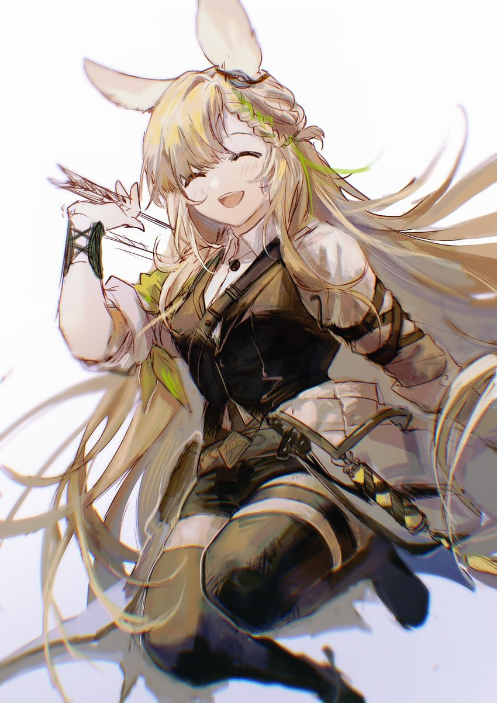
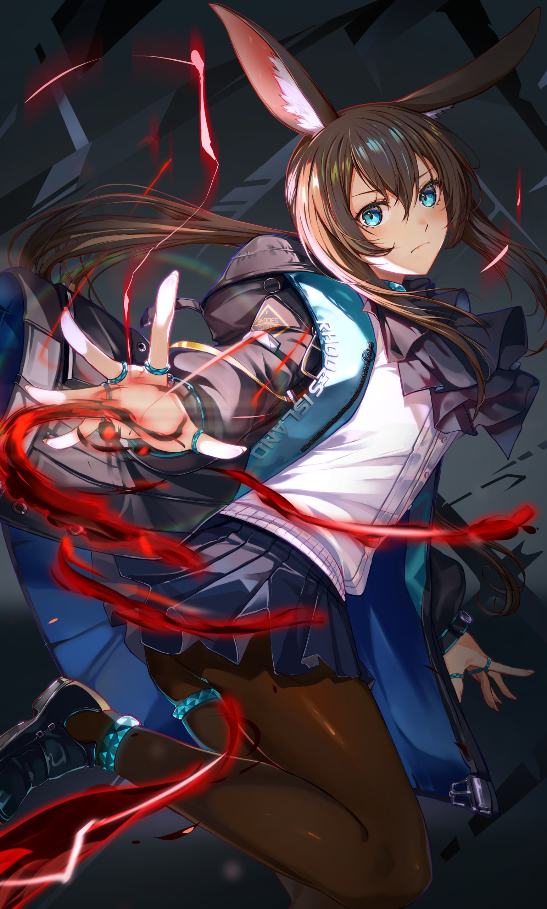
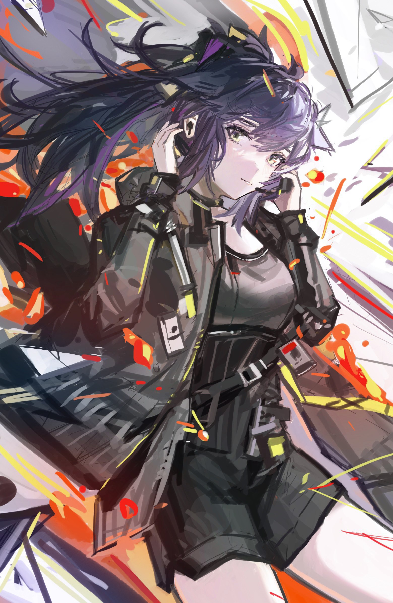
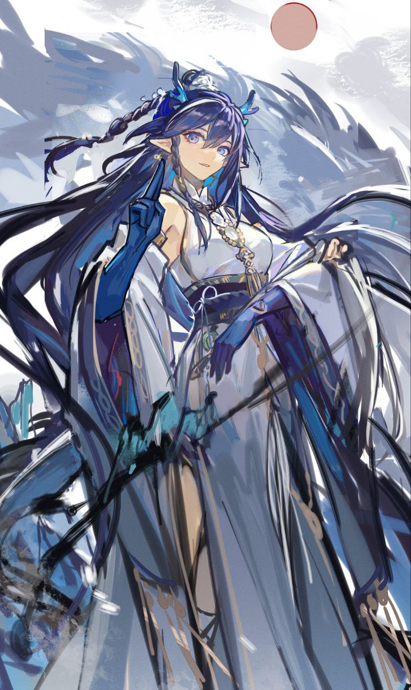

Skadi
is a bounty hunter, currently employed by Rhodes Island. She has shown impressive combat prowess in the past, defeating large creatures, eliminating difficult targets, fighting crucial battles, and winning entire wars. She is very experienced in combat, but her history prior to becoming a bounty hunter is unclear.She is now an Operator for a Rhodes Island assault team, and also executes solo missions.

Texas
is a Penguin Logistics staff member who is extraordinary skilled in single combat. She was assigned as liaison to Rhodes Island, where she assisted with many different operations.Her favourite food is pocky.

Kroos
Following extensive training and practical experience, Kroos has been smoothly promoted to formal Operator status, principally tasked with field missions. Under the guidance of Rhodes Island's Instructors and from tempering in the field, she has greatly matured, gaining her own insight into and views on firing techniques and concealing movements.And remember KOKODAYO!!!

Amiya
The public face of Rhodes Island and its top executive. Although Amiya appears to be a young and inexperienced girl, she is universally trusted and highly qualified for her position.
Amiya now leads the island in fighting for the future of the Infected and striving to exorcise the dark shadow of Originium from the land.

Jessica
A fully enlisted Operator from Blacksteel, stationed at Rhodes Island as part of an exchange training program.
Jessica Brynley, after leaving Blacksteel's base for personal reasons. She chose to go to the barrenlands and became a sheriff. She now supports Rhodes Island as a partnering operator at the local office.

Ling
The eldest sister of Nian and Dusk and the third eldest among all the "siblings" of Sui, Ling is a carefree, alcoholic poet whose power dubbed "Unfettered" (逍遥) has the ability to bend reality, space, and time in the form of dreams.
View Tutorial6
Back to TOP